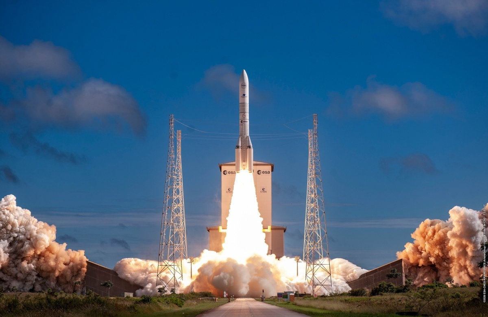
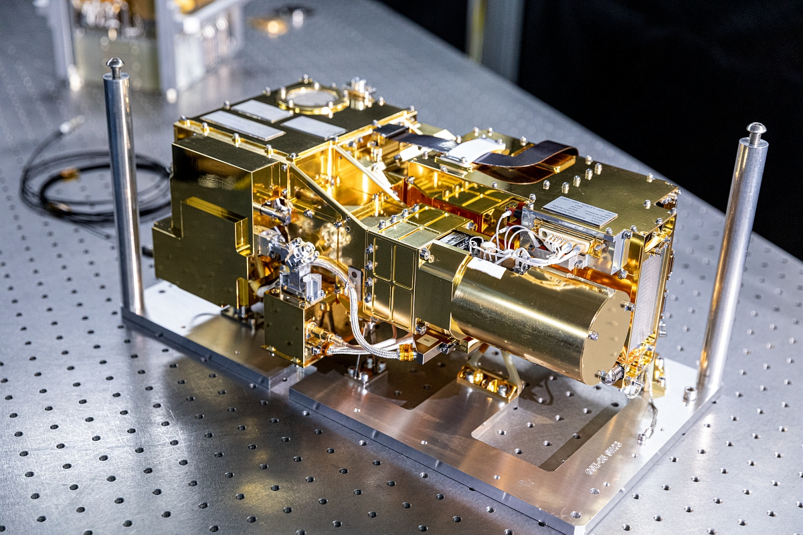
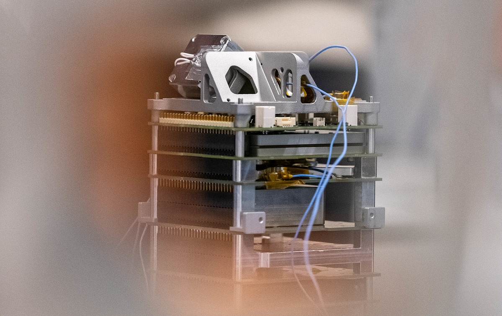

 © CNES/ESA/Arianespace‑ArianeGroup/Optique Video CSG/T Leduc, 2026 La vibro‑acoustique 2026 – En savoir plus »
 © CNES/OLLIER Alexandre, 2019 Interfaces et liaisons vissées pour le spatial 2023 – En savoir plus »
 Support à projet (SPSS, NESS+) © CNES/DE PRADA Thierry, 2021 Analyse Mécanique Environnements dynamiques